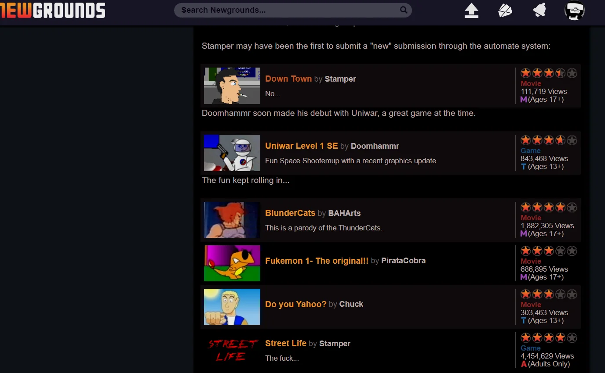

Newgrounds
The Flash portal where a generation of animators learned to ship, still open after the Flash went out.

In 1995, Tom Fulp created a website, and the website became the hub of something the internet no longer has: a scene. [S1]
The scene was Flash. In the early 2000s, Newgrounds was the center of the Flash animation and browser-game world -- the place you posted the thing you made, the place the thing you made got voted on, and the place the votes decided whether anyone ever saw it. Portal before portal was a business model: submit, score, survive or vanish. A whole generation of teenage animators and game makers grew up inside that gauntlet. [S1]
It is hard to overstate how formative the portal was, and the credit is not controversial even where it is informal: Newgrounds is widely credited as a springboard for Flash-era animators and game makers -- the place where people who would later define web animation and indie games first posted work with their real names attached. [S1] The list of careers that passed through is the kind of fact that varies with who is counting, but the trajectory does not: make a thing, put it on Newgrounds, get better because five thousand strangers told you exactly how. [S1]
The format died underneath it. Flash -- the medium the whole scene ran on -- was eventually retired, and every community built on a retired format faces the same choice: follow the medium into the grave, or carry the culture across. The proof that Newgrounds chose to carry arrived in 2025, when Hacker News carried "Newgrounds: Flash Forward 2025," a community event staged under a name that is itself a small monument -- an entire festival built on the pun of the medium's death and the site's refusal. [S2]
That refusal is the entry's whole meaning. This gazette is full of places that died because a parent company closed them. Newgrounds had no parent company, and the 2025 event is evidence it outlived its own medium -- whatever it takes to keep a Flash-era community staging festivals in 2025, it took that. The lesson hiding in the story: the communities that last are the ones someone loves specifically -- not strategically, not at scale, but the way you love a workshop you built in 1995 and never quite finished. [S2]
In 1995 a teenager built a website for the things he made. Thirty years later it is still that website, still shipping, the lights still on, the Flash running on generators. Everything it hubbed -- the animation scene, the browser-game scene -- grew up and moved out. The house stayed.
Remembered: the portal that scored a generation of animators, and the refusal to sink with Flash.
Sources
- S1: Wikipedia: Newgrounds -- https://en.wikipedia.org/wiki/Newgrounds
- S2: Hacker News (2025-08-18, 110 points) -- https://news.ycombinator.com/item?id=44945730
PROVENANCE
| Exhibit no.: | 014 |
| Data-source mode: | facts: seed-corpus; wikipedia-unreachable; wayback-cdx-unreachable; hn-algolia (live, subject query) |
| Illustration: | sourced image -- Bing image search, retrieved 2026-08-29 |
| Found via: | bing-image-search |
| Image url: | https://image.gcores.com/fec68652563352274ddd7419bc7f9279-1376-850.png?x-oss-process=image/resize,limit_1,m_mfit,w_2000/quality,q_90/format,webp/bright,-20 |
| Generated: | 2026-08-29 |
| Generator: | deadweb-pipeline 0.1 (deterministic scaffold) |
| Editorial pass: | web-product-engineer (editorial pass 2) |
| Status: | published |
| Source page: | https://www.gcores.com/articles/165443 |
SOURCES
- Wikipedia: Newgrounds -- https://en.wikipedia.org/wiki/Newgrounds
- Hacker News thread: "Newgrounds: Flash Forward 2025" (2025-08-18) -- https://news.ycombinator.com/item?id=44945730